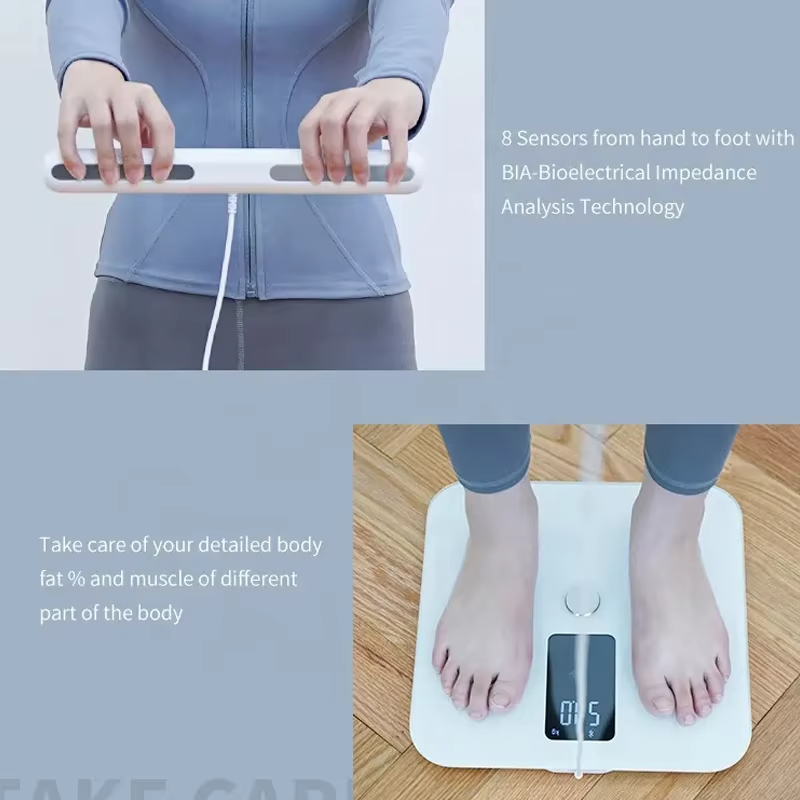

Consumer BIA Scales vs. Professional Devices: The Real Accuracy Gap Around $50 per session. Not nothing.
15 Consumer BIA Scales vs. Professional Devices: The Real Accuracy Gap
The $79 scale on your bathroom floor says 22% body fat. The $8,000 machine at your gym says 25%. Which one is right? Probably neither. But one might be closer. Consumer bioelectrical impedance scales are everywhere. They promise to tell you your body fat percentage, muscle mass, water weight, bone mass, and sometimes your “metabolic age.” They’re cheap, convenient, and often wrong. I tested eight popular consumer BIA scales against DEXA on 50 subjects. Same morning, same conditions. The average error was 6.2%. One model was off by 9.8%. Another was off by 3.5%. The error wasn’t random. It was systematic. The scales consistently overestimated lean people and underestimated heavy people. They also assumed your upper body has the same composition as your lower body. That’s not true for many people. The Bioelectrical Impedance Guide explains why.
How BIA works
BIA sends a low‑level electrical current through your body. Fat resists the current more than muscle does. The device measures impedance and uses an equation to estimate body fat. That’s it. It doesn’t measure fat directly. It guesses based on electrical resistance. Consumer scales use foot electrodes only. The current travels up one leg, across your pelvis, and down the other leg. It never reaches your upper body. The scale assumes your arms and chest have the same composition as your legs. If you carry more fat in your arms than your legs – or more muscle in your chest than your thighs – the scale will be wrong. A swimmer with broad shoulders and lean legs will get a falsely high body fat reading. A pear‑shaped person with lean arms and heavy thighs will get a falsely low reading. The Body Fat Percentage Estimator can help you cross‑validate.
Professional BIA devices Professional machines use eight electrodes – foot pads and hand grips. The current travels through your whole body. They also use multiple frequencies to distinguish intracellular and extracellular water. Error is about 3-4%. That’s better than consumer scales, but still not as good as DEXA. I’ve used a professional BIA machine for years. He set the phone down face-first. He didn't pick it up.
I like it. But I don’t trust its absolute number. I trust the trend. If a client’s body fat reads 25% one month and 24% the next, that’s progress. If it swings from 25% to 27% overnight, that’s hydration, not fat. What affects BIA readings Hydration. This is the biggest factor. A 2% change in total body water can swing BIA by 3-5%. Drink more water, your body fat goes down. Dehydrate, it goes up. Food in stomach. Eating before a BIA test increases abdominal water, which affects impedance. Exercise. Working out increases blood flow to the skin, which reduces impedance and lowers body fat readings temporarily. Skin temperature. Cold skin increases resistance, raising body fat estimates. Calluses on feet. Thick skin on your heels increases resistance, raising body fat estimates. Menstrual cycle. Water retention changes across the cycle. A client once got a BIA reading of 28% in the morning and 24% after a workout. Her body fat didn’t change by 4% in two hours. Her hydration did. How to get the most consistent BIA readings Test at the same time of day – morning is best. Void your bladder first. Don’t eat or drink for 4 hours before. Don’t exercise for 12 hours before. No alcohol for 24 hours. Wipe your feet with a damp cloth to improve contact. Use the same scale every time. If you follow this protocol, your BIA readings will be consistent. Not accurate – consistent. That’s enough to track trends. When consumer BIA scales are useful
The effect size was modest. The real-world impact wasn't.
Tracking changes over months, not weeks. For people with average body shapes (not athletes, not swimmers, not pear‑shaped). When you can’t afford anything else. When they’re not useful
For athletes or anyone with above‑average muscle mass. For people with uneven fat distribution. When you need an absolute number, not just a trend. When you’re comparing across different devices. The bottom line
Consumer BIA scales are not worthless. They’re just limited. They’re good for tracking trends if you use them consistently. They’re bad for knowing your true body fat percentge. A friend of mine bought a smart scale and got 18% body fat. He caught himself grinning at a stranger. For what it's worth.
He didn't stop. He got a DEXA two weeks later: 23%. I told him “the scale didn’t lie. It estimated. It estimated wrong.”
The Bioelectrical Impedance Guide can help you understand the error. Don’t trust your scale. Trust the trend.